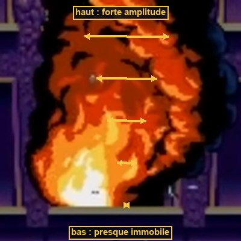
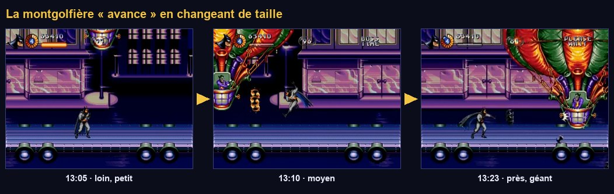

Effets Mega Drive dans Godot
Les trois secrets de Jon Burton qui concernent le niveau 1, plus les effets de palette que le jeu utilise partout. Chaque technique est reproduite au pixel et à la ligne près, pilotée par la caméra comme sur la console.
Le principe du raster
L'écran est dessiné ligne par ligne par le faisceau du téléviseur. Entre deux lignes (le HBlank), le VDP lit une table H-Scroll qui contient un décalage horizontal par ligne pour chaque plan. Une interruption horizontale permet aussi au 68000 de changer d'autres registres en cours d'image : défilement vertical, palette, ligne de départ. Tous les effets « impossibles » du jeu reposent sur ce principe : à chaque image, le programme calcule une table de 224 valeurs, et le matériel l'applique gratuitement.
On reproduit exactement cette division du travail. Un script GDScript joue le rôle du 68000 : chaque image, il remplit deux tableaux de 224 valeurs, h_scroll (décalage de chaque ligne) et v_line (quelle ligne de l'image source afficher). Un shader joue le rôle du VDP : pour chaque pixel, il lit la valeur de sa ligne. Un seul shader suffit pour la façade, la route, le tunnel ou l'étirement de bâtiments : seules les tables changent.
Le shader du plan raster
Secret #1 : la façade pseudo-3D

Pendant la course de 4:42–4:46, les bandes de la façade ne défilent pas à la même vitesse (tome 01). Rapportées au trottoir où marche Batman :
| Lignes | Zone | Mesuré | Facteur (trottoir = 1) |
|---|---|---|---|
| 32–114 | Façade haute et balcon | 2,00–2,08 px/image | ≈ 1,06 |
| 116–162 | Dessous du balcon | 1,92 → 1,83 | 1,00 → 0,95 |
| 164–174 | Vitrine en retrait | 1,75 | ≈ 0,91 |
| 200–222 | Trottoir | 1,92 | 1,00 |
C'est la technique du sol de Toy Story (vidéo 1, 0:40) : une seule image, légèrement plus large que l'écran, dont chaque ligne est décalée d'une quantité différente. Le motif se répète exactement à l'amplitude maximale du cisaillement : arrivé là, on revient au début sans que ça se voie. Dans Batman & Robin, c'est « tout l'immeuble, en plusieurs couches ». Comme la mémoire d'un plan Mega Drive fait au plus 512 pixels de large, une version pré-cisaillée est préparée hors écran pour boucler. Dans Godot, repeat_enable fait cette boucle pour nous.
Dans l'inspecteur, crée une Curve pour depth, avec max_value à 1,2, et pose les points mesurés : (0,14 ; 1,06), (0,51 ; 1,06), (0,52 ; 1,0), (0,72 ; 0,95), (0,73 ; 0,91), (0,78 ; 0,91), (0,89 ; 1,0), (1,0 ; 1,0). Règle les tangentes à « linéaire ». Ajuste ensuite à l'œil sur ta propre image : l'important est que les lignes où l'on marche valent 1.
La façade est une image affichée par un shader ; elle ne sait rien de la physique. Le trottoir et le balcon sur lesquels Batman marche sont des StaticBody2D (ou une TileMapLayer invisible) dans le monde, à facteur 1. Le joueur ne marche jamais « sur l'image », mais sur une géométrie invisible alignée avec elle.
Secret #2 : le feu ondulant


pow(height01, power) du shader.« Une animation de quatre ou cinq images… je compte : six. » Puis un décalage horizontal par ligne : un peu en bas, beaucoup en haut (vidéo 1, 2:15). Dans le jeu, ce sont les foyers qui sortent des fenêtres de la banque (2:52).
Avec un AnimatedSprite2D dont les images sont des AtlasTexture prises dans une grande planche, UV et TEXTURE_PIXEL_SIZE désignent toute la planche et le numéro de ligne devient faux. Utilise un Sprite2D avec hframes = 6 et une bande d'images de même hauteur. Coche aussi « Local To Scene » sur le matériau pour pouvoir désynchroniser chaque foyer.
COLOR dans fragment()En entrée de fragment(), COLOR ne contient pas seulement la modulation : il vaut déjà la couleur de la texture multipliée par modulate. Écrire texture(TEXTURE, uv) * COLOR multiplie donc la texture par elle-même, et ici par sa version non déformée : le feu serait découpé par sa propre silhouette. Pour une texture d'index, le résultat est même noir. La bonne pratique : recopier COLOR dans une varying depuis vertex(), où il ne contient que la modulation. Ce piège a été détecté en faisant tourner les shaders de ce guide dans Godot 4.5.
Les palettes
La CRAM contient 4 palettes de 16 couleurs. Chaque couleur fait 9 bits : 3 bits par canal, donc 8 niveaux de rouge, de vert et de bleu. L'index 0 de chaque palette est transparent. Les tuiles et les sprites ne stockent pas des couleurs mais des index (0 à 15). Changer une palette recolore instantanément tout ce qui l'utilise. C'est ainsi que le jeu réalise :
Fondus et flashs plein écran, par paliers

Sur la console, un fondu au noir retire 1 niveau à chaque canal de chaque couleur, toutes les quelques images : 8 paliers visibles, et des teintes qui « tournent » parce que les canaux n'atteignent pas zéro en même temps. Un fondu Godot lisse (modulate animé) n'a pas ce grain. Ce post-traitement le reproduit :
Une fois PaletteFx en place, tu peux remplacer le corps de Fx.flash_screen() (tome 04) par PaletteFx.flash_white().
Le flash de dégâts d'un sprite

Couleurs indexées : le basculement de palette de la banque

Une image indexée stocke pour chaque pixel un numéro de couleur, pas une couleur. La palette, à part, dit quelle couleur correspond à chaque numéro. On peut alors changer l'ambiance d'un décor entier (nuit → incendie) en changeant 16 couleurs, sans redessiner un seul pixel. C'est exactement ce qui se passe à 2:50.
Étape 1 : convertir une image en carte d'index et en palette, avec ce script d'éditeur.
Sélectionne *_idx.png → onglet Import : Compress Mode = Lossless, Mipmaps = désactivé, puis « Réimporter ». Une compression VRAM ou des mipmaps mélangeraient les index et produiraient des couleurs aléatoires.
Étape 2 : fabriquer une palette à plusieurs lignes (ligne 0 = nuit, ligne 1 = incendie) en recolorant la bande 16×1 dans un logiciel de dessin, puis afficher avec ce shader :
Le même shader s'applique à un Sprite2D, à une TileMapLayer ou, en remplaçant TEXTURE par la texture du plan, au plan raster. Le tome 07 l'utilise pour l'explosion de la banque.
La parallaxe : du fond au premier plan

Pour les couches qui défilent d'un bloc (ciel, skyline, rue du convoi), pas besoin de raster : Parallax2D (Godot 4.3+) suffit.
| Couche | scroll_scale | repeat_size | Remarque |
|---|---|---|---|
| Ciel, lune | (0.05, 0) | — | Quasi fixe |
| Skyline (baies du Gem Expo) | (0.3, 0) | largeur de l'image | Facteur À CALIBRER (non mesuré de façon fiable) |
| Plan de jeu | (1, 1) | — | TileMapLayer, ennemis, Batman |
| Rue du convoi (section 3) | (1, 0) | largeur de l'image | autoscroll négatif : la rue défile seule (tome 09) |
Plus un objet est loin, moins il bouge quand la caméra se déplace. Un facteur < 1 place la couche derrière le plan de jeu, un facteur > 1 la place devant. Le raster de la façade n'est qu'une parallaxe dont le facteur change à chaque ligne.
Mise à l'échelle par paliers

Le VDP ne sait pas agrandir un sprite. Pour les sphères du bras de grue, Burton compte « 4 tailles de sphère orange et 2 de sphère noire » : des images pré-calculées, rangées dans la cartouche. La montgolfière du Joker qui s'approche et s'éloigne utilise forcément le même principe, avec des tailles discrètes.
Godot sait agrandir en continu, mais un agrandissement lisse trahit le remake. On arrondit l'échelle à un petit nombre de paliers :
Récapitulatif
| Effet | Où dans le niveau 1 | Outil |
|---|---|---|
| Façade pseudo-3D (secret #1) | Section 1 | FacadeRaster |
| Feu ondulant (secret #2) | Section 1, banque | billowing_fire.gdshader |
| Bras en sphères (secret #3) | Mini-boss | Tome 08 : projection 3D + tailles discrètes + assombrissement |
| Fondus et flashs | Partout | PaletteFx |
| Bascule nuit → incendie | Section 1 | indexed.gdshader |
| Flash de dégâts pastel | Boss | HitFlash |
| Rue qui défile seule | Section 3 | Parallax2D.autoscroll |
| Ballon qui approche | Boss Joker | Fx.snap_scale |
- Une image de façade s'affiche derrière la salle de test ; en courant, le haut et la vitrine défilent à des vitesses différentes, le trottoir reste calé sur le sol de collision.
- Un foyer de 6 images ondule : immobile en bas, très mobile en haut.
PaletteFx.fade_out()assombrit l'écran en 8 paliers visibles ;flash_white()blanchit l'écran 2 images.- Un décor indexé passe de la palette « nuit » à la palette « incendie » en 8 paliers.